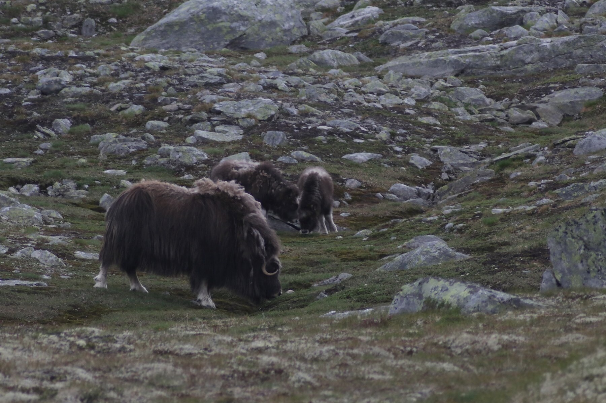
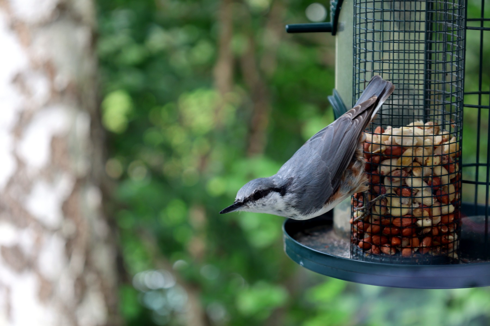
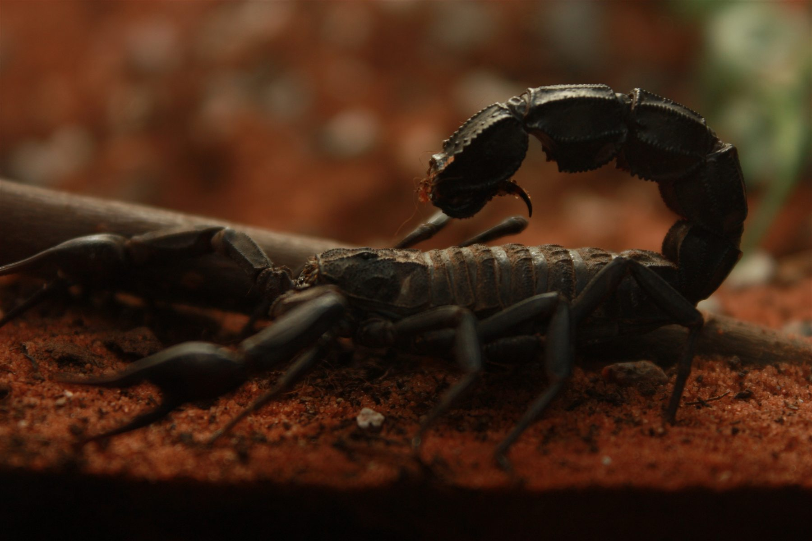
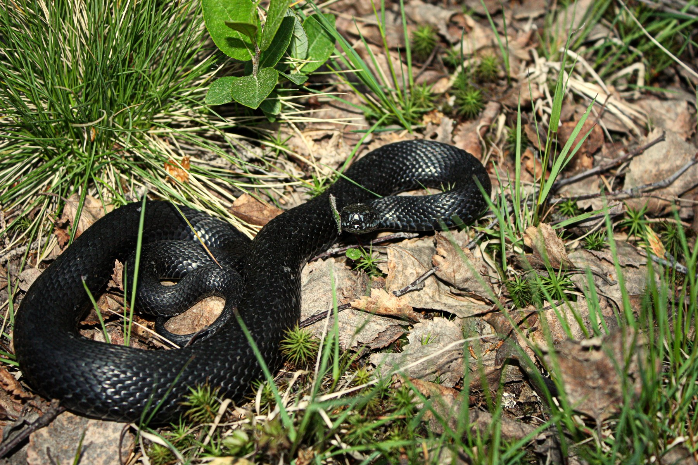
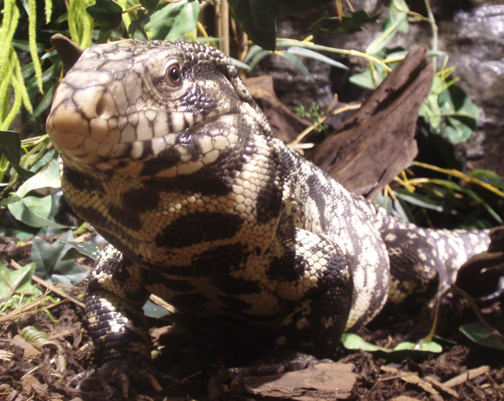
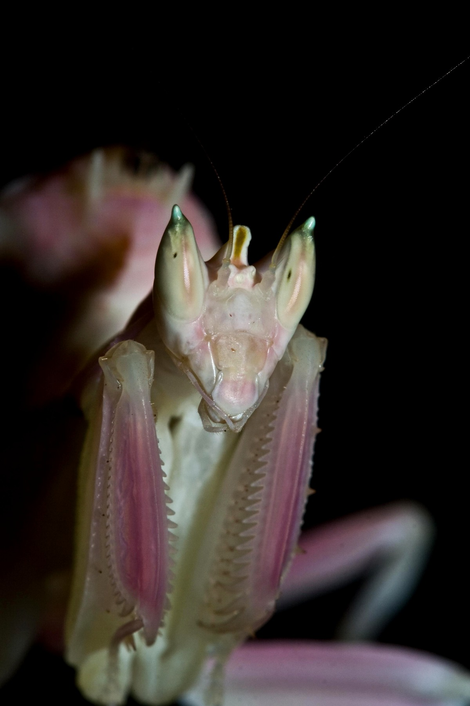

Norsk natur
Oter i vannet
Se etter: Hvordan holder oteren hodet stabilt mens kroppen arbeider under vann?
Møt oterenNorsk natur og dyrelivEgne dyr på nært hold
Kryp & Krabater handler først og fremst om norsk natur og dyreliv – fra små skapninger under føttene våre til fugler på bratte klipper og ville dyr i fjellet. Underveis møter vi også noen av dyrene i min egen samling.
Dyr, natur og nysgjerrighet – fortalt for barn.

Møt guiden din
Jeg hjelper deg med å finne små detaljer, stille gode spørsmål og velge hvilket dyrespor du vil følge videre. Se etter tips fra meg når det er noe ekstra spennende å legge merke til.
Tina er en illustrert guide. Dyrene, fotografiene og observasjonene på sidene er ekte – og det er alltid de virkelige dyrene som står i sentrum.
{{ site.data.kryp_weekly.date_label }}
{{ site.data.kryp_weekly.intro }}
Tina spør: {{ site.data.kryp_weekly.question }}
Velg et spor
Vi begynner ute – i fjæra, skogen, våtmarka og fjellet. Derfra følger vi nysgjerrigheten inn i dyrerommet, der ekte dyr fra samlingen gir nye detaljer å undersøke.

Møt moskus og oter, og lær hvordan kropp, pels, spor og leveområde forteller hvor dyrene hører hjemme.
Følg sporet
Møt spettmeisen og ravnen, fra akrobatisk klatring til hukommelse og problemløsning.
Følg sporet
Møt skorpion, kneler, kakerlakker og Sabrina - dyr som belønner tålmodig observasjon.
Følg sporet
Møt huggormen i norsk natur og tre reptiler fra samlingen – og utforsk tungeflikk, solvarme og livet i vann.
Følg sporetArtsprofiler på norsk
Kjennetegn, levevis, mat og små detaljer du kan se etter – med egne bilder og opptak fra samlingen og norsk natur.
Se etter én detalj
Korte opptak blir små observasjonsoppdrag: start bare filmen du vil se, les spørsmålet, og følg lenken når du vil forstå mer.
Se etter: Hvordan holder oteren hodet stabilt mens kroppen arbeider under vann?
Møt oterenSe etter: Hvordan bruker kakerlakkene antennene mens de undersøker underlaget?
Møt kakerlakkene


Fra møte til forståelse
Et tungeflikk, et sansehår, et spor i snøen eller en fugl som vender tilbake til reiret kan begynne med et enkelt spørsmål. Målet er å svare tydelig, vise det virkelige dyret og samtidig gi plass til det neste spørsmålet.
Laget for unge seere
Kryp & Krabater er først og fremst norskspråklig. Språket, tempoet og fortellingene skal gjøre dyr og natur tilgjengelig for barn uten å forenkle bort det som gjør dyrene spennende.
Egne opptak og fotografier holder dyrene i sentrum – enten de lever i samlingen eller ble møtt ute i naturen.
Gift, rovdyr, uvante kroppsformer og dyreatferd forklares uten å gjøre dem til skremsler.
Hver fortelling skal gi mer oppmerksomhet til hagen, fjæra, skogen, fjellet eller dyrene som finnes nær hjemmet.
To prosjekter med samme utgangspunkt
Kryp & Krabater er den norskspråklige barnekanalen med hovedvekt på norsk natur og dyreliv. Egne dyr fra samlingen gir nære møter og ekstra spor å følge.
Introvertebrates er den engelskspråklige fordypningen med den nåværende samlingen i sentrum, sammen med artsprofiler, observasjoner fra dyrehold, fotografi og interessant edderkoppforskning.
English summary: Kryp & Krabater focuses on Norwegian nature and wildlife for curious children, complemented by close encounters with animals from the Introvertebrates collection.